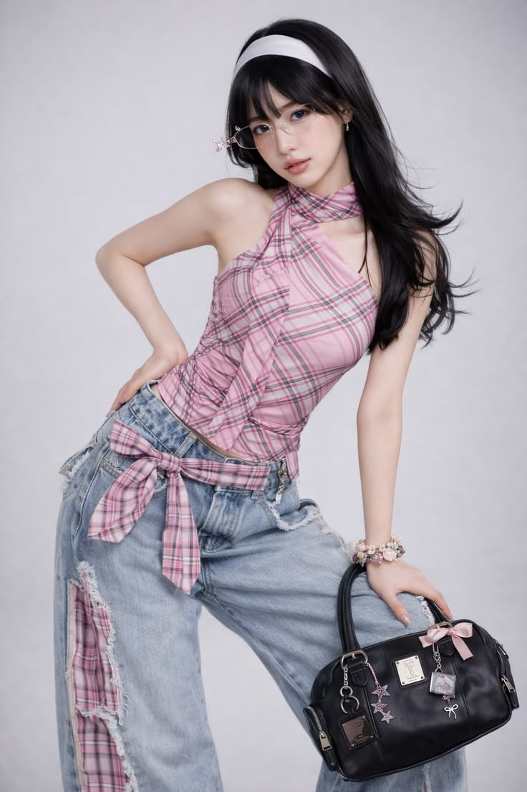
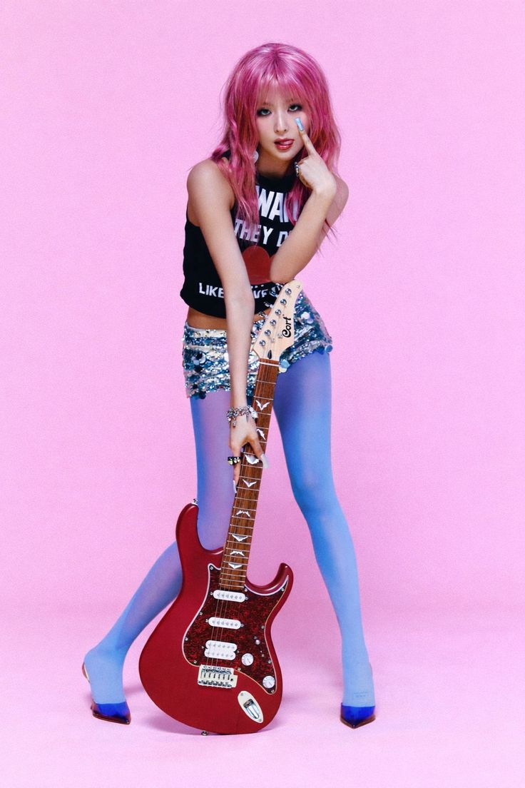
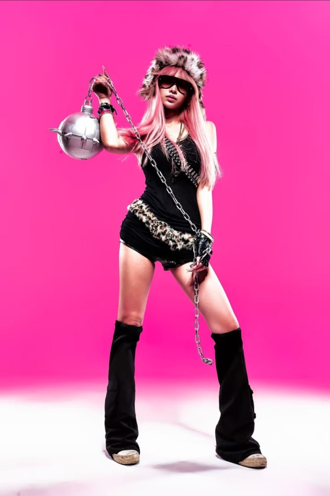
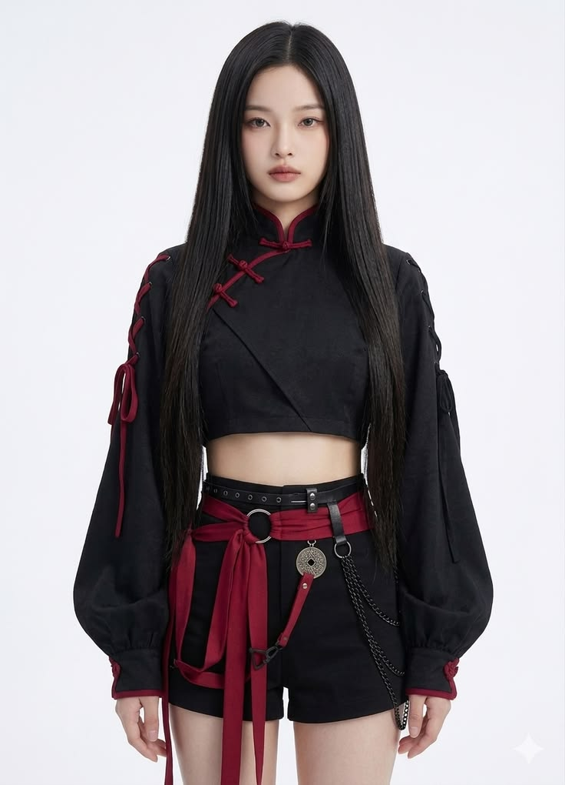
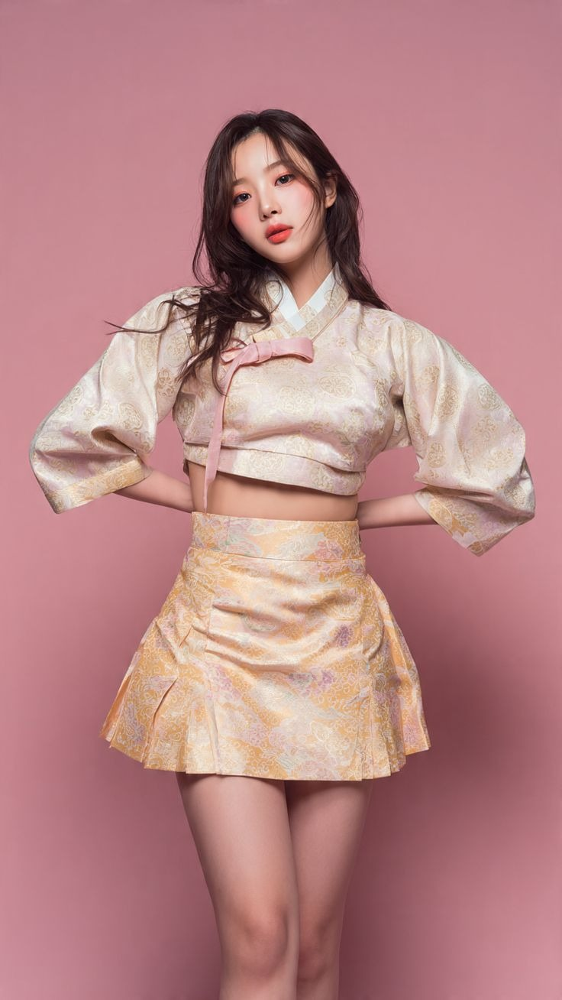
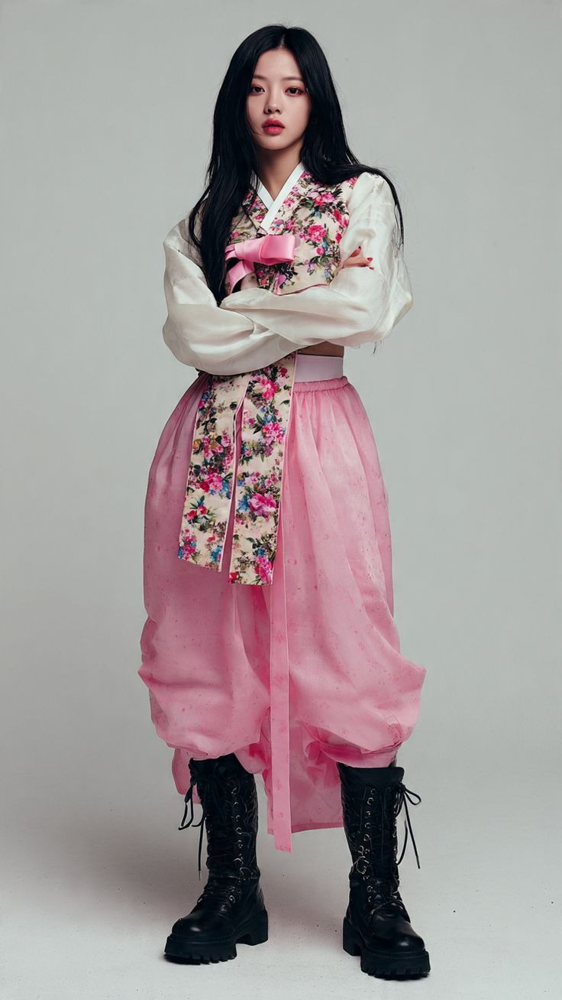

Explora la fusión perfecta entre la vanguardia futurista del streetwear coreano y la elegancia minimalista de las tendencias japonesas. Tu próxima obsesión estética empieza aquí.

Este look es un ejemplo perfecto del Y2K moderno (la estética de los años 2000) fuertemente influenciado por el streetwear asiático y la moda actual de los Idols de K-Pop (como el grupo NewJeans).
Este estilo es un híbrido de Y2K Glam Punk, y Retro-Futurismo, con una ejecución pulida que recuerda al estilo de los ídolos de K-Pop. Es un look de "estrella de rock" urbana de una manera muy colorida y juguetona.


Este estilo es una fusión muy específica y audaz de varias subculturas de moda de principios de la década de 2000 (Y2K). Se puede describir de forma más precisa con términos como "Y2K Goth", "Y2K Punk-Pop" o una versión.
Es una estética súper popular en la moda urbana asiática más vanguardista, en los vestuarios de escenario de grupos de K-pop de hecho, y es una referencia enorme en el diseño contemporáneo de personajes coreanos.


El jeogori (la chaqueta) se acorta drásticamente para dejar el abdomen al descubierto. Mantiene el icónico cuello blanco junto con unas mangas acampanadas de longitud media que le dan un aire juguetón pero estructurado.
Es una tendencia que toma la indumentaria tradicional coreana y la deconstruye para adaptarla a la vida urbana contemporánea, creando una silueta audaz y llena de actitud.

"La moda asiática no sigue tendencias; las crea. Es la mezcla perfecta entre respetar la individualidad y dominar la comodidad."
Diseños holgados y versátiles que se adaptan a ti, no tú a ellos.
Costuras reforzadas, texturas innovadoras y caídas de tela que transforman un outfit básico en uno de pasarela.
Olvídate del fast fashion aburrido de siempre. Diseños que te harán destacar en cualquier lugar con total seguridad.
Únete a nuestra comunidad y recibe un 15% de descuento en tu primer pedido. Sé el primero en enterarte de los lanzamientos exclusivos antes de que se agoten.